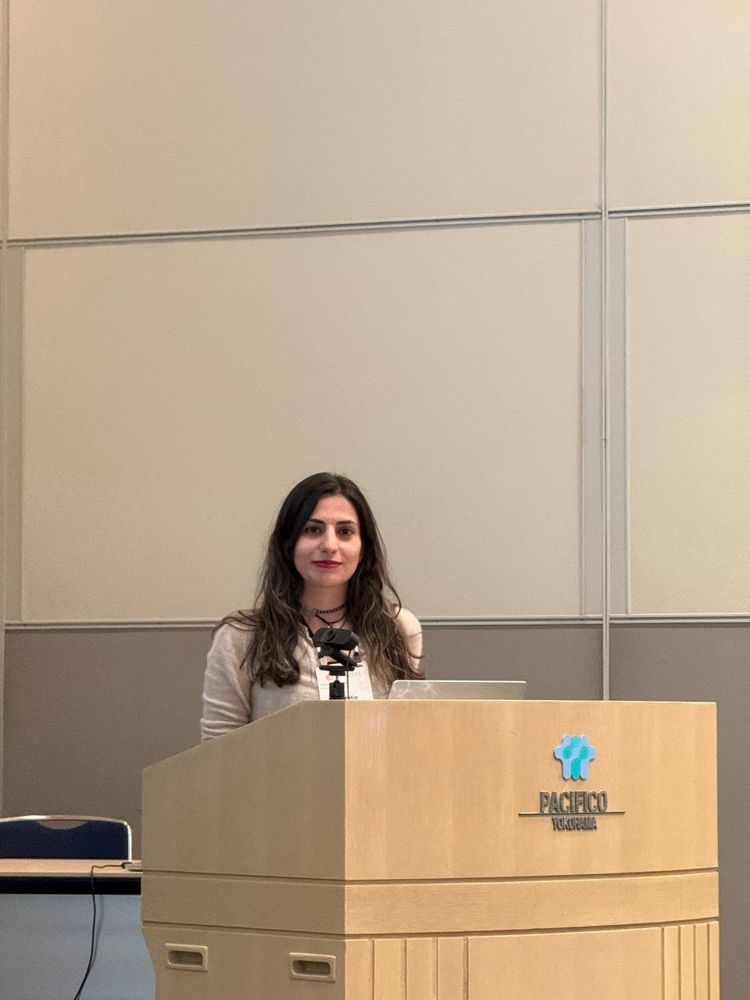

Mahdieh Ghane Ezabadi
Hi! My name is Mahdieh Ghane, and I recently graduated from Simon Fraser University with a strong interest in deep learning and applied machine learning for healthcare applications. My experience includes deploying advanced machine learning models, such as state-of-the-art generative AI and multi-modal large language models (LLMs), to effectively address real-world challenges.
I have deep proficiency in Python, PyTorch, and TensorFlow, and I excel at building robust ML pipelines and advancing prototypes to production-ready applications. Known for my collaborative spirit and strong communication skills, I thrive in cross-functional team environments, delivering actionable insights and solutions in distributed, large-scale settings. I earned my Master's in Computer Science from Simon Fraser University under the supervision of Prof. Xingdong Yang and my Bachelor's from Sharif University under the supervision of Prof. Mahdi Fardmanesh.
In my free time, I enjoy being in nature, hiking, traveling, or solving puzzles.
Experience
- 2024 Intern at Zaui Software: Developed a data-driven pipeline leveraging PyTorch and Scikit-learn to analyze large-scale historical client datasets (2000–present). Integrated database querying and preprocessing steps to generate actionable insights for inventory optimization, pricing strategies, and channel allocation. Focused on efficient data modeling and performance, contributing to a projected 20% increase in profit.
- 2024 Researcher at University of British Columbia: Designed and implemented a deep learning pipeline to predict injury outcomes in concussed athletes, analyzing gender-based differences using advanced neural network architectures.
- 2023 Research Assistant at Simon Fraser University: Developed a smart textile system integrating deep learning models (transformers and LLMs) for activity recognition, achieving 92% accuracy.
- 2021 Research Assistant at Amirkabir University: Achieved 95% accuracy by designing a deep neural network for EEG signal processing, contributing to advancements in cognitive healthcare.
- 2020 Data Scientist at Royan Institute: Conducted data analysis comparing surgical and drug treatments for injured mice, developing an automated data analysis toolbox in Python.
Projects
- Developed a range of self-learning projects, including building a Retrieval-Augmented Generation (RAG) system using FastAPI, creating an LLM-powered chatbot with RAG capabilities using LlamaIndex, setting up streaming data pipelines with Kafka, conducting event streaming with live visualization, and tracking machine learning experiments using MLflow.
- Implemented a novel method, "Using Poisson Blending for Getting Best Depth and Normals from Images," as a Computational Photography course project. GitHub
- Implemented various computer vision projects, including a CNN structure for digit recognition, fine-tuning neural networks for image classification, and performing image segmentation and 3D reconstruction in Computer Vision course projects. GitHub
- Implemented Poisson blending, various methods of texture synthesis, and edge-aware filtering for a Computational Photography course. GitHub
- Performed segmentation of breast cancer images as a Medical Image Processing course project.
- Designed and implemented a novel neural network for detecting focus state from EEG signals as a Deep Learning course project.
- Implemented a CNN network on EMG signals for leg angle estimation in a Neural Network course.
- Implemented a novel logistic regression method, "Variational Bayesian Logistic Regression," to enhance the accuracy of attention detection, comparing it with other methods in a Pattern Recognition course.
- Implemented a novel method, "Multiple Kernel-Based Discriminant Analysis via Support Vectors," for dimension reduction on attention data using EEG signals after preprocessing, as a Biomedical Signal Processing course project.
- Investigated transformer-based super-resolution methods for satellite image enhancement, enabling improved background subject analysis and higher-quality data interpretation.
- Implemented CNNs on FPGA for satellite image classification, optimizing computational and memory efficiency.
Publications
My research focuses on deep learning, biomedical signal processing, computer vision, and deploying machine learning models for real-world applications. I have experience in developing efficient ML pipelines, generative AI, and multi-modal LLMs.

IntelliLining: Smart Interlining for Activity Sensing through TENGs
Mahdieh Ghane Ezabadi
Simon Fraser University
Developed a smart interlining textile system for recognizing daily activities with over 92% accuracy. Integrated voice capture and chat functionality using large language models (LLMs), enabling real-time user interaction.
Combinational Therapy of Lithium and Human Neural Stem Cells in Rat Spinal Cord Contusion Model
Mahdieh Ghane Ezabadi
Royan Institute
Implemented projects involving surface reconstruction, geometric processing, and contour extraction using advanced methods like Signed Distance Functions and Quadric Error Metrics.